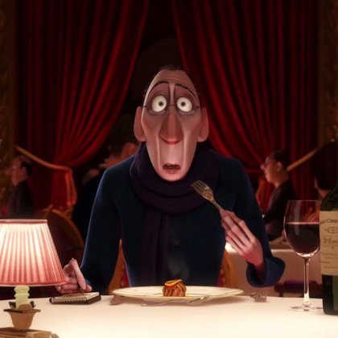

Добро пожаловать в «У Гюсто»
«У Гюсто» — знаменитый парижский ресторан, где традиции французской кухни встречаются с кулинарной смелостью.
Вдохновлённые философией шефа Огюста Гюсто «Каждый может готовить», мы создаём изысканные блюда, которые доступны по духу каждому.
Атмосфера уюта, звон бокалов и ароматы Прованса ждут вас в самом сердце Парижа.
Посмотреть менюПочему выбирают нас?
Подлинный вкус Парижа
Мы не просто готовим французскую кухню — мы живём ею.
Каждое блюдо — от классических улиток до фирменного рагу — создано с любовью к традициям и лучшим локальным продуктам.
«Готовить может каждый» — философия на деле
Мы верим, что великая еда не требует титулов.
Поэтому наши блюда доступны по цене (для такого уровня), а секретные ингредиенты — это страсть и внимание к деталям.
Отзывы критиков

Антуан Эго
Ресторанный критик
«Во многих отношениях работа критика легка: мы ничем не рискуем, но при этом имеем власть над теми, кто предлагает на наш суд свою работу и самих себя. Но бывают моменты, когда критик действительно чем-то рискует — и это происходит, когда он открывает для себя что-то новое и защищает его. Прошлой ночью я испытал нечто совершенно новое. Необыкновенный ужин из необыкновенного источника. Сказать, что еда и её создатель бросили вызов моим представлениям о высокой кухне — значит ничего не сказать. Они потрясли мои основы. В прошлом я не делал секрета из своего презрения к знаменитому девизу шеф-повара Гюсто: «Готовить может каждый». Но теперь я наконец понял, что он имел в виду. Не каждый может стать великим художником, но великий художник может прийти откуда угодно. Я снова вернусь в "У Гюсто", когда мне захочется почувствовать вкус самой жизни. Это было... божественно».